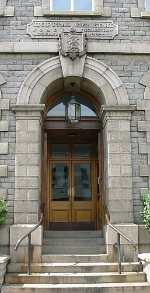

Moussieu l'Editeu,

J'tiomes assis l'aut'sé, mé et la Merrienne et l'Bram de Caen d'la Ville au Bas dans l'parleûx, ouêsque la bouonnefemme avait allumé un feu contre la mouoillêtuthe quand l'Bram r'mertchit que l's'Etats s'n'allaient dêpensé un tâs d'sous à l'hopita.
“Vethe' se fit la Merrienne 'et j'voudrais savé pourtchi.'
“Ch'est pour bâti une maison pour les noces' j'l'y dit.
“N'y'a pas d'run pour yeux dans l'hopita et y pathait qu'y'en à même qu'ont à couochi sûs l'plianchais.'
“Epis' l'Bram ajouotit 'y lûs faut étout une nouvelle salle pour les opéthâtions.'
“Bon!' s'fit la Merrienne 'et combain qu'y'en a don d'chais noces tchi lûs faut une maison à yeux-mêmes?'
Le Bram raiponnit que par la gâzette le docteur Avarne en voulait bétot une chentaine.
“Eh, man grand-péthe béni' s'êcriyit la bouonnefemme, 'à tchi faithe?'
“Pour soigni les malades' j'l'y dit. 'Quand y'en a huit à neuf doûzaines, au jour d'agniet, y n'peuvent pas en prendre d'autres. Y veulent pouvé en acc'modé au mains deux chents.'
“Et y faut chent noces pour chenna?'
“A ch'qu'y pathait' dit Bram. 'Quand à mé j'n'y connais rein.'
“Mais mé j'y connais tchique-chose,” ou s'fit. “Quand, ch't'année-là tchi fit si fraid, j'avais l'Ph'lip ichin au liet et touos les mousses étout et personne à m'aidgi, j'mênagit ben à m'dêpôtchi. Et pas seulement eune femme de journée à trouvé pour netti et faithe le coutchage. Epis ach'teu y faut bétôt pûs d'noces que d'malades.”
“Mais chen qu'on n'comprenez pas,” l'Bram explitchit, “ch'est qu'les grands soins sauvent la vie à ben des pouôres balloques tch'éthaient crévé dans ches temps-là. Les gens vivent pûs longtemps ach'teu à cause de chenna.”
“Ch'n'est pas vrai,” s'fit la Merrienne, toute excitée. “Dans man temps n'y'avait pas tout chu gniolin-là et n'y'avait pas tant d'entrepreneurs d'enterrements. Ichin à Saint Ouquand tchi-tchun s'n'allait d'vant avé atteint l'âge de nonante ans ch'tait par accident. R'garde ma méthe, tch'y tricotait ocquo et liêsait sans lunnettes quand oulle avait nonante-sept ans. S'ou n'avait pas tchais ava les d'gréts ou s'sait envie ach'teu.”
“Ma fingre,” s'fit l'Bram “ch'la s'pouorrait ben. Oulle tait duthe, la vieille.”
“Et quand ès opéthâtions,” la Merrienne continuit, “aut'fais nou n'entendait pas pâslé d'chonna. Quand eune personne avait ma tchique bord, nous enviyait pour le docteu, tch'y l'y donnait d'la méd'cine. Mais agniet ch'est tout-d'suite une opéthâtion.”
“Y'a un docteu tch'y vos met tchique sal'té sûs l'visage pour vos endormis, epis un autre tch'y fait des crêux ichin et la et prend toutes sortes de libertés avec san couté. Ch'est dêgouotant,” ou dit, en finissant.
“Sans doute,” j'l'y-dis, “mais y'a souësante ans, quand n'y'avait pas tant d'opéthâtions, les gens crévaient. Ben mûs, après tout de s'soumettre au couté que d'être entêrré. Et si, d'main, tu tais prînse d'un mauvais ma, faudrait ben faithe comme le restant. Faut être raisonnablye, après tout.”
“Véthe,” s'accordit l'Bram, “quand y'a un chance de sauvé sa vie, y faut la prendre.”
“Eh ben, je n'sis pas d'même,” dit la Merrienne. “Quand y s'sa temps pour me d'patchi mes draps, j'm'en ithai comme je sis, pas copée en morciaux. Je sis eune femme respectablye, comme ma méthe et sa méthe devant lyi et si je n'peux pas me r'faithe avec eune bouteille ou deux d'med'cine, je n'mé pliaindrai pon.”
“En v'la assez d'chutte convérsation-là,” j'l'y dit. “Fait-nous un verre caud, bouonnefemme!”
PH'LIP
8/1/1947
Viyiz étout: